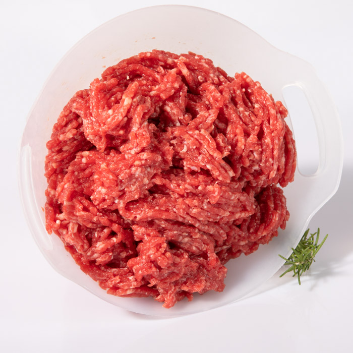
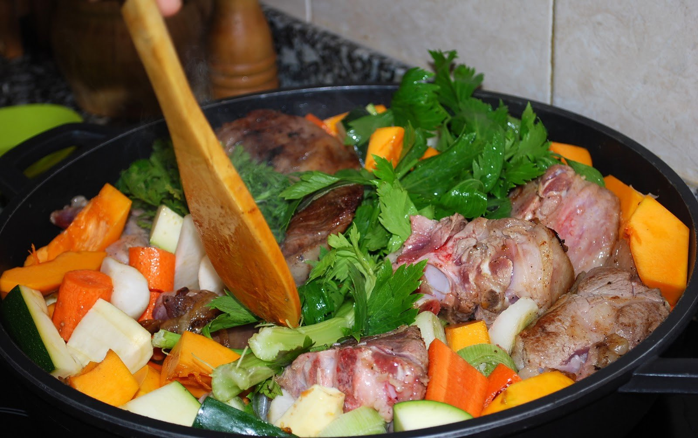
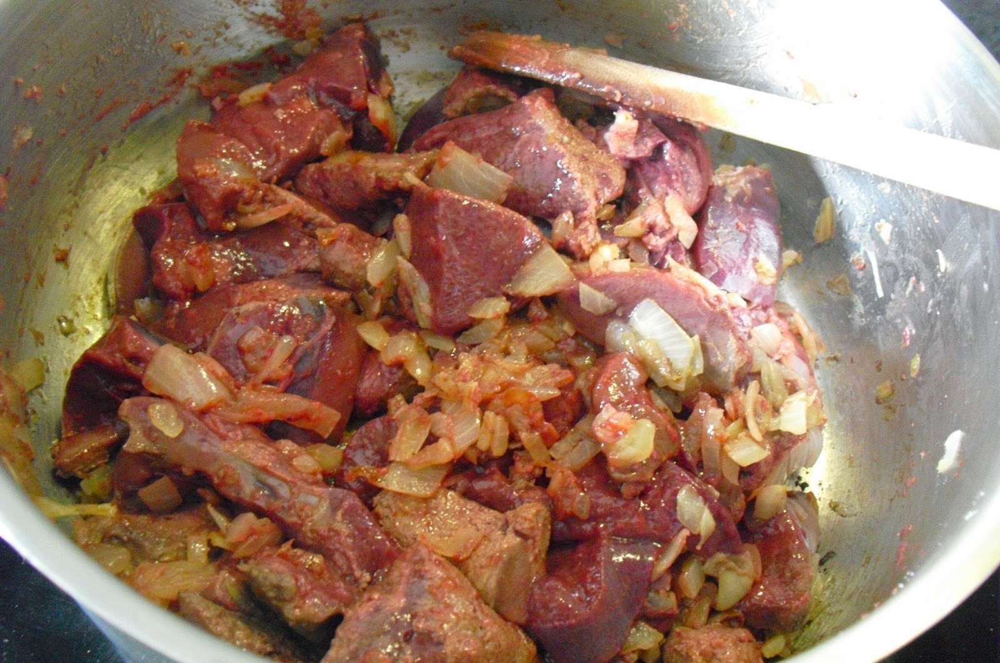
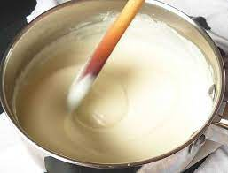
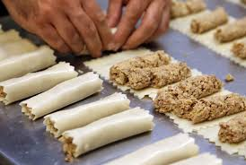

1. Talleu la carn per rostir a daus.
2. En una cassola, poseu-hi oli i llard, rossegeu la carn salpebrada ben daurada i retireu-la.
3. A la mateixa cassola, poseu-hi les verdures i sofregiu-les. Un cop sofregides, torneu a posar-hi la carn i afegiu-hi el vi ranci. Tapeu la cassola. Aneu-ho remenant de tant en tant perquè no s’enganxi, fins que la carn sigui cuita.
4. Finalment, poseu-hi el fetge tallat a trossos i deixeu-ho coure 5 min més. Retireu-ho del foc.
5. Per a la beixamel: poseu la llet al foc i lligueu-la amb un roux de mantega i farina. Poseu-hi sal, pebre i nou moscada i reserveu-ho. Tritureu la carn rostida i barregeu-hi la meitat de la beixamel.
6. Estireu les plaques de pasta i farciu-les amb una mànega de pastisseria. Enrotlleu-les. En una placa per anar al forn, poseu-les ben cobertes de beixamel i deixeu-les 20 min, amb el formatge ratllat per sobre. Ja ho podeu emplatar.
